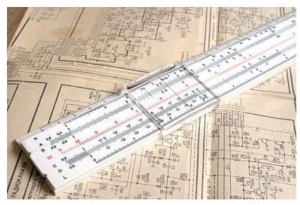

复习题A · 1
- 填空题:
(1)若 ，则 ___；若 ，则 ___.
(2)将 化成有理数指数幂的形式为___.
(3)若 ，则 ___.
(4)若 ，则 ___.
学生阅读版 / 沪教版高中数学
必修第一册
第3章幂、指数与对数 · 保留教材主线与原题
教材与正式教参整合
让我们用一个例子说明怎样应用对数来简化计算.
假设我们要计算两个九位数的乘积
直接计算费时费力，怎样利用对数来简化计算呢?
先求此乘积以 10 为底的对数
由对数性质 1 , 它等于 lg 867432691+lg 345723901 .
要直接计算这些对数自然十分困难, 但是如果已编制了一个常用对数表, 可以查真数在 1 到 10 之间的常用对数(实用中的对数表正是如此)，就可以得知
其中 是查表得到的. 类似地,可得 . 这样所求乘积之对数为
为了最终求得所需要的乘积 867432691X345723901,还需要查一个反对数表 (实际上是一个以 10 为底,而指数在 0 到 1 之间的指数表),就得到 ,即 ,从而
即原乘积的常用对数约等于 . 由于同底的两个对数相等,其真数必相等, 就得到
(现在，用普通的计算器可以得到更精确的值
由上所述, 利用一个常用对数表及一个反对数表, 就可以通过转化为对数大大简化任何两个大数(多位数)的乘除及开方运算. 这正如恩格斯(F. Engles)所指出的: "这种从一个形态到另一个相反形态之转变, 并不是一种无聊的游戏, 它是数学科学最有力的模杆之一，如果没有它，今天就没法去进行一个较为复杂的计算. "(《自然辩证法》)
然而, 制作一个有实际用处的对数表是一项浩大的工程, 假如按步长 0.001 从 1 变化到 10 , 就有 1 万个对数要计算. 而要算一个数的对数使得精度达到四位小数, 也绝不是一件容易的事. 然而, 如果制成了对数表, 就可以一劳永逸地为其他人所用, 意义是十分重大的.
对数是纳皮尔发明的, 其出现事先似乎毫无征兆, 但它绝不是从天上掉下来的, 而是源自当时在天文、航海及工程实践中迫切需要简化大量繁杂计算的实际需要. 纳皮尔从 1594 年到 1614 年花了二十年的时间造出了第一个对数表, 他说过: "要实际应用数学, 我看最大的障碍就是处理很大数字的相乘、相除，或是求取二次或三次方根， 因此我开始思考，有没有什么方法可以去除这些障碍. "由于对数不仅能将乘除运算化为加减运算, 而且能将乘方、开方运算化为乘除运算, 一下子将人们从繁复的计算中解放出来, 无异于成倍地延长了科学家与工程技术人员的寿命. 德国天文学家开普勒(J. Kepler)是最早使用对数的人之一, 他成功地在行星轨道的计算中运用了对数. 法国数学家、天文学家拉普拉斯 (P.-S. Laplace) 曾说过:"对数的发明让天文学家的寿命都延长了，因为少做了很多苦工. "恩格斯曾经将解析几何、对数及微积分并列为最重要的数学方法.
在清代初年 (17 世纪中叶) 对数传到了中国，1653 年薛凤柞与波兰人穆尼阁 (J. N. Smogolehshi)共同编译出版了《比例对数表》一书，正式将对数介绍到中国，薛凤柞还将对数应用到历法计算中. 后来, 康熙皇帝组织编撰《数理精蕴》一书，在其下篇・卷三十八"对数比例"一节中，一开始就说:"对数比例乃西士若往·纳白尔(John Napier)所作， 以假数与真数对列成表，故名对数表. "这个假数，我们现在叫"对数"，而若往·纳白尔就是我们现在所述的纳皮尔.
在科学发展的历史中，极少有哪个抽象的数学概念，能像对数一样，一开始就很快受到了整个科学界的热烈欢迎. 对数的发明, 无疑是人类认识史上一个极大的飞跃与革命, 在人类文明的进程中起了划时代的作用. 自纳皮尔 1614 年发明对数以来, 一直到袖珍计算器的出现, 对数以及根据对数的原理所设计的一些计算仪器, 一直是进行复杂计算的有效方法和工具. 根据对数原理设计的计算仪器, 最著名的就是后来为科学家和工程师广泛使用的计算尺, 它在长达 350 年的时间中, 一直是科学家与工程师的忠实伴侣和有力工具. 自 20 世纪 70 年代初期袖珍计算器上市以后, 计算尺才失去市场, 并随着计算机的飞速发展而彻底退出了历史舞台，对数在计算中无可替代的地位也一去而不复返了. 但是, 对数的概念及对数函数的种种性质在众多数学分支及科学领域中至今一直发挥着重要的作用，并且有增无减. 对数从计算的有力工具向科学的重要方法的转化, 在数学的发展史上留下了浓墨重彩的篇章, 记录着人类不断走向文明进步的光辉历程.

指数幂的拓展:正整数指数幂、整数指数幂、有理数指数幂、实数指数幂.
幂的运算性质:对任意给定的正数 、 及实数 、 ，
(1) ；
(2) ；
(3) .
的唯一的数 .
(1) ;
(2) ；
(3) ;
(4) ;
(5) ;
(6)(换底公式)如果 也是一个不等于 1 的正数，那么 .
(1)若 ，则 ___；若 ，则 ___.
(2)将 化成有理数指数幂的形式为___.
(3)若 ，则 ___.
(4)若 ，则 ___.
(1)若 与 互为相反数，则有 ( )
A. ; B. ;
C. ; D. 以上答案均不对.
(2)设 ，下列计算中正确的是 ( )
A. ; B. ;
C. ; D. .
(1) ； (2) .
(1)若 ，则 ___.
(2)若 ，则 ___.
(3)若 ，则 的值为___.
A. ; B. ; C. ; D. .